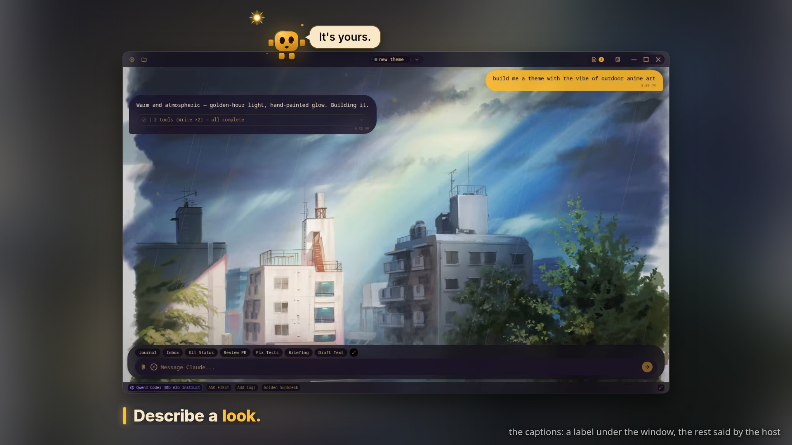
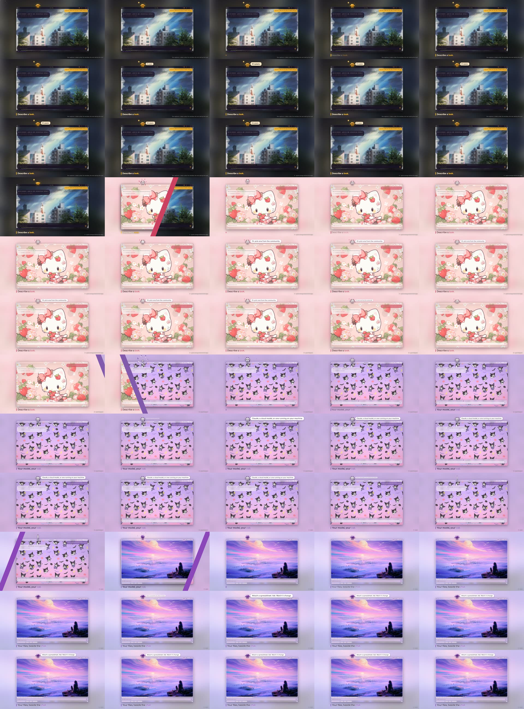

Check-in 3b: the captions, the theme change, the centred title
Your three notes from check-in 3, built and shown before anything goes into the film. Two short clips and one still. Three answers at the bottom.
1 · The captions: one label, the rest said by the host

The label sits under the window, lined up with its left edge: a short bar in the theme's accent, then the headline in the theme's own font, its last word in the accent. The bar draws down on the beat and the words fade in beside it. The bubble is the second line of copy, said by the host: it pops out beside its head with the tail pointing at it, follows the host wherever it goes (a couple of frames behind, so it trails a touch on a move), flips to the other side when the host is near the right edge, and disappears whenever the host does (the dive into the game). White on the light themes, cream on the dark ones, always with the theme's font. The old A / B / C designs are gone.
It is in motion in the clip below: the label comes in on every cut, and the host says a new line in each segment.
2 · Three ways to change theme (instead of the jump)
Ten seconds, four segments on the same window, each cut the film's real wipe. The grey tag at the bottom right names what you are watching. The first segment is just the captions. Then, one per cut:
- A · Quick-change behind the wipe. The host sees the band coming, ducks and throws its arms over its eyes; the band passes over it like a magician's cloth; it springs up in the new costume, arms flung wide, a small pop off the bar, and settles. The costume change happens exactly as the band crosses it, so the wipe and the change are one event. Only works on a cut with a wipe; the three flips inside the themes beat (where the app repaints itself, no wipe) would use C.
- B · Poof-teleport. It crouches, whips up into a wisp and vanishes in a puff just before the cut; on the beat it puffs back in on its perch in the new costume, growing from its feet with a little overshoot, then the landing squash. Works everywhere. The host is off screen for about a third of a second on every cut.
- C · Twirl. It spins on the spot, two full turns, fast in the middle with a blur, stretched tall and thin; the costume switches the instant it is edge-on; it comes out of the spin with a dizzy wobble (the X-eyes face) that rings down, then the welcome face. Works on a cut and on an in-place flip alike, and would also replace the three "jump for joy" hops in the themes beat.
My recommendation: C, because one move covers every theme change in the film (cuts and in-place flips), it never hides the host, and the dizzy face gives it a character beat. A is the most cinematic on a cut but needs a second move for the in-place flips; B is the cleanest but the host keeps vanishing. Any of the three keeps the landing feel; none of them travels across the screen, which is what made the jump feel odd. The context-free reviewer picked A ("the only move the wipe itself motivates: the band hides the swap and the spring-up lands on the beat"). A mix is fine: A on the cuts, C on the in-place flips.

3 · The intro, with the bounce-back and the centred title
Your note applied: after the punch the host is knocked straight back off the Y in a fast low arc; once it has landed, the wordmark slides left to meet it while "Assistant" finishes rolling out, so the host and "YouCoded Assistant" end up centred as one group and hold there for about a second (it looks over at the full title and blinks) before the window rises and it hops onto the title bar. Two small fixes from the reviewer: the walk starts a little sooner (it waited at the edge for three seconds), and the hop onto the title bar now takes off before the window arrives (the window used to rise through it). The closing link is now www.youcoded.ai.
- Captions — the label + bubble as shown, or notes (position, size, colour, how the bubble moves).
- Theme change — A, B or C (or a mix: e.g. A on cuts, C on in-place flips).
- Intro — the bounce and centred hold as shown, or notes.